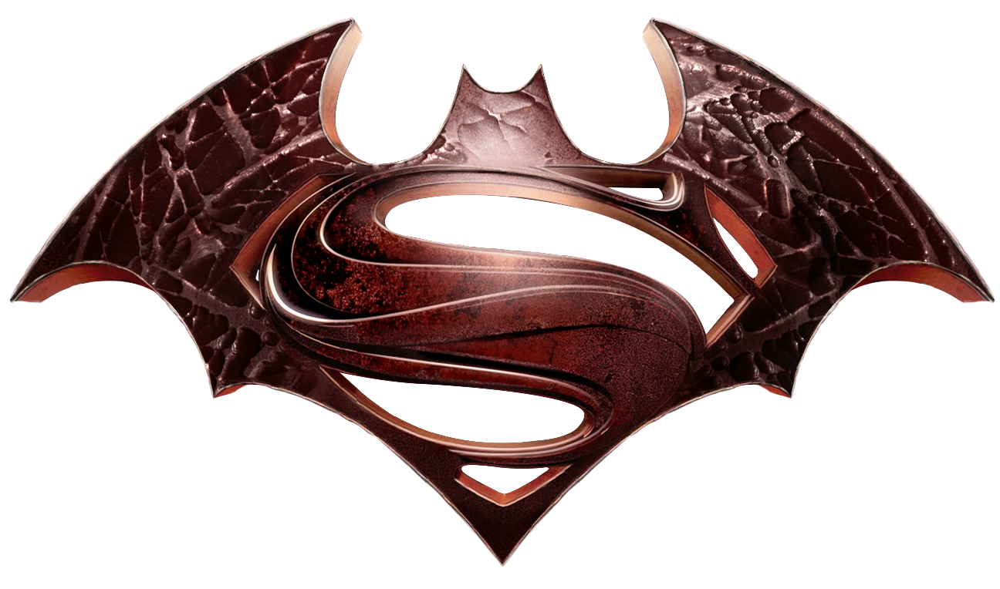

Welcome !
Superman is a superhero who appears in American comic books published by DC Comics.The character was created by writer Jerry Siegel and artist Joe Shuster, and debuted in the comic book Action Comics #1 (cover-dated June 1938 and published April 18, 1938).
Read MoreOur Services !
Superman was born on the fictional planet Krypton and was named Kal-El. When he was a baby, his parents sent him to Earth in a small spaceship moments before Krypton was destroyed in a natural cataclysm.His ship landed in the American countryside, near the fictional town of Smallville.
Read MoreAbout us !
Superman is the archetype of the superhero: he wears an outlandish costume, uses a codename, and fights evil with the aid of extraordinary abilities. Although there are earlier characters who arguably fit this definition, it was Superman who popularized the superhero genre and established its conventions.
Read MoreMy Sample Website Project
Since 1938,
Superman stories have been regularly published in periodical comic books published by DC Comics. The first and oldest of these is Action Comics, which began in April 1938.
My Sample Website Project
Action Comics was initially an anthology magazine, but it eventually became dedicated to Superman stories.
Read MoreMy Sample
The first adaptation of Superman beyond comic books was a radio show, The Adventures of Superman, which ran from 1940 to 1951 for 2,088 episodes, most of which were aimed at children.
